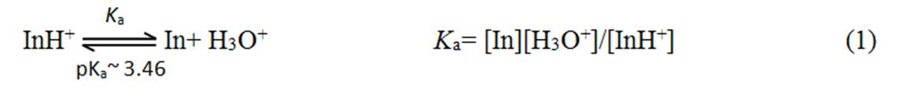

रासायनिक विज्ञान→आणविक अवशोषण स्पेक्ट्रोस्कोपी लैब→प्रयोगों की सूची
अवशोषण स्पेक्ट्रा पर पीएच प्रभाव: स्पेक्ट्रोफोटोमेट्रिक विधि द्वारा पीकेए निर्धारण
यदि किसी अणु में अम्ल / क्षार वर्ण होता है, तो घोल के pH में परिवर्तन का अणु के अवशोषण स्पेक्ट्रा पर महत्वपूर्ण प्रभाव हो सकता है। पीएच या एच+आयन एकाग्रता संयुग्म एसिड-बेस जोड़ी रासायनिक संतुलन को प्रभावित करता है। इस प्रकार एक विलयन में pH परिवर्तन किसी विलयन में उपस्थित प्रजातियों (अणुओं या आयनों) की संख्या और प्रकार में परिवर्तन का कारण बन सकता है। आइए हम मिथाइल ऑरेंज का उदाहरण लें। मिथाइल ऑरेंज एक एज़ो डाई (आर एन = एन आर () (चित्रा 1) है जहां एन = एन डबल बांड और पड़ोसी आर्यल समूहों से इलेक्ट्रॉन क्रोमोफोर का गठन करते हैं जो पीले रंग का कारण बनता है। मिथाइल ऑरेंज एक कमजोर आधार के रूप में कार्य करता है और अत्यधिक अम्लीय घोल में ढल जाता है। प्रोटॉन एन = एन डबल बॉन्ड में नाइट्रोजन में से एक को बांधता है जो डबल बॉन्ड को तोड़ता है। इससे अणु में इलेक्ट्रॉन / बंधन की व्यवस्था होती है। इस प्रकार, आणविक संरचना और मानक मिथाइल नारंगी के क्रोमोफोर अम्लीय माध्यम में बदल जाते हैं जो समाधान में लाल रंग को जन्म देते हैं।

सुविधा के लिए, हम "इन" के रूप में मिथाइल ऑरेंज का प्रतिनिधित्व करते हैं और उपरोक्त आयनिक संतुलन को निम्नानुसार लिखते हैं:

कहाँ पेएएसिड पृथक्करण स्थिर है। एसिड-बेस संकेतक जो कमजोर एसिड या आधार हैं, पूर्ण पृथक्करण से नहीं गुजरते हैं और इस तरह के पृथक्करण संतुलन को प्रदर्शित करते हैं। संतुलन को H को अलग करके पीछे या आगे खिसकाया जा सकता है3+घोल में आयन सांद्रता।
अभ्यास में, पीएच और पीकेएअक्सर एच के स्थान पर उपयोग किया जाता है3+आयन सांद्रता और केएक्रमशः। इसलिए, लघुगणक के नकारात्मक को लेते हुए, कोई समीकरण (1) से लिख सकता है,
pKए= पीएच - लॉग ([In] / [InH)+)) (2)
या, पीएच = पीकेए+ लॉग ([में] / [InH +]) (3)
जहां where [] 'संलग्न प्रजातियों की एकाग्रता का प्रतिनिधित्व करता है। Eq (3) से पता चलता है कि पी केएमान की गणना की जा सकती है यदि किसी दिए गए pH पर संयुग्म एसिड और बेस पेयर की सांद्रता ज्ञात हो। गणितीय रूप से eq। (3) इंटरसेप्ट = pK के साथ एक सीधी रेखा समीकरण (y = c + mx) हैएअगर pH को लॉग ([In] / [InH +]) के खिलाफ प्लॉट किया जाता है। दूसरे शब्दों में, जब लॉग ([In] / [InH +]) = 0, यानी, [In] = [InH +], pH = pKए। इस प्रकार, पी.के.एफ़ंक्शन पीएच (चित्रा 2) के रूप में अनुपात [[] / [InH +] का निर्धारण करके आसानी से रेखांकन किया जाता है।

मिथाइल नारंगी के मानक और प्रोटोनेटेड रूप दोनों रंगीन प्रजातियां हैं; इसलिए उनकी सांद्रता को स्पेक्ट्रोफोटोमीटर की सहायता से अधिकतम अवशोषण की तरंग दैर्ध्य पर अवशोषित माप द्वारा आसानी से निर्धारित किया जा सकता है। यह पीके के स्पेक्ट्रोफोटोमेट्रिक निर्धारण की अनुमति देता हैएमिथाइल ऑरेंज के मामले में। बीयर-लैम्बर्ट लॉ के अनुसार, किसी दिए गए तरंग दैर्ध्य में एक विलेय द्वारा अवशोषित प्रकाश की मात्रा इसकी दाढ़ की एकाग्रता के समानुपाती होती है:
A = εcl, जहां ए = शोषक, A = दाढ़ अवशोषकता (एक स्थिर) अवशोषित अणु की विशेषता, एल = प्रकाश अवशोषण की पथ लंबाई, प्रकाश अवशोषित अणु की सी = एकाग्रता। एक मिश्रण में, दो अवशोषित प्रजातियों का अवशोषण, InH+और, एक विशेष तरंग दैर्ध्य में, InH के अवशोषण का योग है+और उस तरंग दैर्ध्य में। InH की सांद्रता+और मिश्रण में दो अलग-अलग तरंग दैर्ध्य पर मिश्रण के अवशोषण को मापकर निर्धारित किया जा सकता है (जैसे, λ1और λ2) और दोनों तरंग दैर्ध्य पर दोनों घटकों के लिए दाढ़ अवशोषक (अंशांकन घटता के माध्यम से) प्राप्त करके। आम तौर पर, तरंग दैर्ध्य को चुना जाता है ताकि दो प्रजातियों के अवशोषण के बीच अनुपात, एINH+/एमें, को अधिकतम और न्यूनतम किया जाता है। इस प्रकार एक दो स्वतंत्र समीकरणों का निर्माण कर सकता है जिसमें दो अज्ञात होते हैं, [InH+] और में]।
ए (एम)1) = एINH+(λ1) + ए।में(λ1) = ईINH+(एल 1)[InH +] + ईमें (λ1)[में] (4)
ए (एम)2) = एINH+(λ2) + ए।में(λ2) = ईINH+(? 2)[InH +] + ईमें (λ2)[में] (5)
कहाँ ईINH+(Λi)और εमें (λi)InH के दाढ़ अवशोषक हैं+और (क्रमशः, λ परमैंइकाई पथ की लंबाई के लिए। एक निर्धारित कर सकते हैं [InH+] और [इन] उपरोक्त दो समीकरणों को हल करके। हालांकि, इस विधि का उपयोग करने के लिए मिश्रण के लिए अलग-अलग पीएच मानों के साथ-साथ व्यक्तिगत प्रजातियों के लिए बहु-तरंग दैर्ध्य माप की आवश्यकता होती है। यह विधि विशेष रूप से आवश्यक है यदि एसिड-बेस संतुलन में दो से अधिक आयनीकरण चरण शामिल हैं। मिश्रण और एकल प्रजातियों के लिए बहु-तरंगदैर्ध्य अवशोषण माप ईक के रूप में एकल आयनीकरण कदम वाले सिस्टम से बचा जा सकता है। (1)।
Eq की परीक्षा। (3) दिखाता है कि किसी को अनुपात [In] / [InH निर्धारित करने की आवश्यकता है+] एक फ़ंक्शन पीएच के रूप में, व्यक्तिगत प्रजातियों की एकाग्रता नहीं। चूंकि मिथाइल ऑरेंज इंडिकेटर की निरंतर मात्रा का उपयोग सभी पीएच मानों में किया जाता है, इसलिए संकेतक की कुल एकाग्रता सी द्वारा दी गई हैटी= [में]ख= [InH+]ए= [In] + [InH+], जहां [में]ख= केवल उच्च पीएच में मौजूद (संकेतक का आधार रूप), और [InH] की सांद्रता+]ए= केवल InH की एकाग्रता+(एसिड फॉर्म का इंडीकेटर) कम पीएच में मौजूद होता है। में और InH की सापेक्ष मात्रा+समाधान के पीएच के आधार पर उपरोक्त दो चरम सीमाओं के बीच भिन्न होता है। यदि कोई दो चरम स्थितियों के लिए अवशोषण मूल्यों को मापता है (के लिए]खऔर [InH+]ए) दिए गए तरंग दैर्ध्य पर, सभी अन्य अवशोषण मान उनके बीच स्थित होते हैं। यह सभी पीएच मान पर मौजूद प्रत्येक प्रजाति की सापेक्ष मात्रा निर्धारित करने की अनुमति देता है। शोषक माप की तरंग दैर्ध्य के लिए सबसे अच्छा विकल्प वह है जो दो प्रजातियों के लिए अवशोषण में सबसे बड़ा अंतर है। मिथाइल ऑरेंज इंडिकेटर सिस्टम के मामले में, तरंग दैर्ध्य जिस पर यह देखा गया है, वह λ हैअधिकतमInH के लिए+(जैसे कि,INH+एलअधिकतम) 510 एनएम)। इस पर मान लीजिएINH+एलअधिकतम:
एए= शोषक [InH] के लिए+]ए
एख= के लिए शोषक [में]ख
किसी भी मध्यवर्ती पीएच मान के लिए ए = अवशोषण
इन शर्तों के तहत,
ए = एए× [InH+]/सीटी+ एख× [में] / सीटी(6)
उपरोक्त संबंध को अनुपात खोजने के लिए पुनर्व्यवस्थित किया जा सकता है, [In] / [InH+], परINH+एलअधिकतमनिम्नलिखित नुसार:
[में] / [INH+] = (ए)ए-ए) / (ए - एख) (7)
इसलिए, प्रयोग को समायोजित करने के लिए निकला [एच3+] या पीएच मान ज्ञात करने के लिए जिसमें दो चरम शामिल हैं और अनुपात को निर्धारित करने के लिए इसी अवशोषण मूल्यों को मापते हैं [/] / [InH+] स्पेक्ट्रोफोटोमेट्रिकल। प्रयोगात्मक समाधान के पीएच सामान्यतः एक बफर प्रणाली का उपयोग करके अलग-अलग है। Disodium हाइड्रोजन ऑर्थोफोस्फेट (Na)2HPO4) साइट्रिक एसिड बफर सिस्टम मिथाइल नारंगी सूचक प्रणाली के लिए इस्तेमाल किया जा सकता है। आदर्श रूप में, बफर घटकों ब्याज की तरंगदैर्य रेंज में किसी भी प्रकाश को अवशोषित नहीं करना चाहिए। निम्नलिखित बातों पर ध्यान दिया जाना चाहिए। बफर घटकों की सापेक्षिक सांद्रता समाधान pH को नियंत्रित करती है और समाधान pH संकेतक प्रजातियों, InH के सापेक्ष सांद्रता को नियंत्रित करता है+और में। पृथक्करण संतुलन स्थिरांक (ए) वर्तमान स्पेक्ट्रोफोटोमेट्रिक विधि में मापा जाता है "एकाग्रता संतुलन स्थिर", क्योंकि "गतिविधि" शब्दों के बजाय सांद्रता का उपयोग निर्धारण के लिए किया जाता है। कएऔर इसलिए पी.के.एमान, अन्य संतुलन स्थिरांक की तरह, तापमान पर निर्भर हैं।